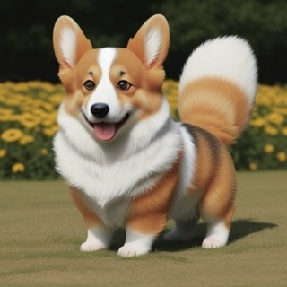

Stable Diffusion (SD) is een geavanceerde AI-beeldgenerator dat lokaal gerund kan worden op persoonlijke
computers (meer hierover in SD Setup).

Corgi Sunglasses Corgi wearing Sunglasses
Het gene wat SD uniek maakt in vergelijking met zijn competitie, is dat SD opensource is met een bloeiende
gemeenschap van individuelen die
implementaties creëren die zijn afgeleid van deze open source-mentaliteit.
Fijn afgestemde modellen: De community werkt aan het maken van modellen door bemiddel van het te trainen
op
datasets van specifieke onderwerpen/stijlen. Hiermee krijgen ze uiteindelijk accuratere resultaten.
Deze modellen kunnen gaan over bijvoorbeeld:
Stijlen
Karakters
Objecten
Concepten
Extensies: Buiten de functionaliteit dat SD standaard bied zoals: Tekst-to-Image, Image-to-Image, Upscaling
ect. Zijn er ook gemeenschap gedreven extensies en tool die de gebruiker verder kunnen helpen in het
creëren en
manipuleren van AI-gegenereerde afbeeldingen, zoals:
Dreambooth: Makkelijk trainen van modellen
ControlNet: Herkennen en toepassen van afbeelding-dieptemappen,
contouren & poses voor het lezen en creëren van afbeeldingen.
Updates: De webUI en extensies die gebruikt worden, zijn zowat allemaal publieke GitHub repositories.
Hierdoor kan
alles simpel geüpdate worden met een simpele pull-request (dat geautomatiseerd kan worden, meer hierover in
SD Setup)
Benieuwd om te beginnen?
Deze website bied extensieve uitleg voor beginners en gevorderde over het
gebruik en het installeren (SD Setup) van Stable Diffusion.
Hier worden concepten bedekt zoals:


 Corgi Sunglasses Corgi wearing Sunglasses
Corgi Sunglasses Corgi wearing Sunglasses